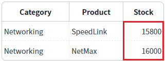

[DataList] 컬럼 데이터에 필터 적용하기 - 메소드 사용 검색
1개요
DataList의 'setColumnFilter' 메소드를 사용하여 사용자가 정의한 메소드로 컬럼 데이터에 필터를 적용한 예제입니다.
이 예제는 'setColumnFilter' 메소드의 첫 번째 인자의 'type' 속성을 'func'로 설정하여 구현되었습니다. 'type' 속성의 설정 값이 'func'로 지정되면 사용자가 정의한 메소드로 검색합니다. 사용자가 정의한 메소드는 'key' 속성에 설정합니다.
사용자 정의 메소드에서 행의 인덱스를 받기 때문에 다른 컬럼의 데이터를 참조하여 로직을 구성할 수 있습니다.
2구현된 기능
'Category' 컬럼에 필터 적용 - 데이터가 'Networking'과 일치한 경우
'Category' 컬럼에 필터 적용 - 데이터 중 'Services'가 포함된 경우
'Category' 컬럼에 필터 적용 - 데이터가 'Services'와 일치한 경우
'Category' 컬럼에 필터 적용 - 데이터가 'Servers'와 일치하거나 'Services'가 포함된 경우
'Category' 컬럼의 데이터가 'Networking'과 일치하고 'Stock' 컬럼의 데이터가 '15000' 이상
3예제 테스트 방법
3.1공통 버튼 설명
'DataList의 데이터 초기화' 버튼
기능 : DataList에 적용된 필터를 모두 해제하고 초기 데이터를 설정합니다.
'DataList의 필터 전체 해제' 버튼
기능 : DataList에 적용된 필터를 모두 해제합니다.
3.2'Category' 컬럼에 필터 적용 - 데이터가 'Networking'과 일치한 경우
1
STEP 1: 초기 상태 확인하기
필터를 적용할 DataList와 GridView와 연결되어 있습니다. GridView를 통해 필터가 적용된 데이터를 확인할 수 있습니다. 초기 상태는 필터가 적용되지 않은 상태입니다.
Image 1.브라우저(Chrome) 실행 예시

2
STEP 2: 'Category' 컬럼에 필터를 적용합니다.
"'Category' 컬럼에 필터 적용 - 데이터가 'Networking'과 일치" 버튼을 클릭합니다.3
STEP 3: 실행된 결과를 확인합니다.
'Category' 컬럼의 데이터가 'Networking'과 일치하는 데이터가 출력됩니다.
Image 2.브라우저(Chrome) 실행 예시

영역 '로그 확인'에 출력된 로그를 확인합니다. (브라우저의 개발자 도구 콘솔에도 로그가 출력되며, 객체 형식으로 확인할 수 있습니다.) 필터 조건이 담긴 JSON을 확인할 수 있습니다.
Example 1.Log
[10:03:01] # 'Category' 컬럼에 필터 적용 - 데이터가 'Networking' | 필터 조건
[10:03:01]
{
"type": "func",
"colIndex": "category",
"key": scwin.userColumnFilter_type1,
"param": "type1",
"condition": "and"
}3.3'Category' 컬럼에 필터 적용 - 데이터 중 'Services'가 포함된 경우
1
STEP 1: 초기 상태 확인하기
필터를 적용할 DataList와 GridView와 연결되어 있습니다. GridView를 통해 필터가 적용된 데이터를 확인할 수 있습니다. 초기 상태는 필터가 적용되지 않은 상태입니다.
Image 3.브라우저(Chrome) 실행 예시
2
STEP 2: 'Category' 컬럼에 필터를 적용합니다.
"'Category' 컬럼에 필터 적용 - 데이터 중 'Services'가 포함" 버튼을 클릭합니다.3
STEP 3: 실행된 결과를 확인합니다.
'Category' 컬럼의 데이터에 'Services'가 포함되는 데이터가 출력됩니다.
Image 4.브라우저(Chrome) 실행 예시

영역 '로그 확인'에 출력된 로그를 확인합니다. (브라우저의 개발자 도구 콘솔에도 로그가 출력되며, 객체 형식으로 확인할 수 있습니다.) 필터 조건이 담긴 JSON을 확인할 수 있습니다.
Example 2.Log
[10:04:00] # 'Category' 컬럼에 필터 적용 - 데이터 중 'Services'가 포함 | 필터 조건
[10:04:00]
{
"type": "func",
"colIndex": "category",
"key": scwin.userColumnFilter_type2,
"param": "type2",
"condition": "and"
}3.4'Category' 컬럼에 필터 적용 - 데이터가 'Services'와 일치한 경우
1
STEP 1: 초기 상태 확인하기
필터를 적용할 DataList와 GridView와 연결되어 있습니다. GridView를 통해 필터가 적용된 데이터를 확인할 수 있습니다. 초기 상태는 필터가 적용되지 않은 상태입니다.
Image 5.브라우저(Chrome) 실행 예시
2
STEP 2: 'Category' 컬럼에 필터를 적용합니다.
"'Category' 컬럼에 필터 적용 - 데이터가 'Services'와 일치" 버튼을 클릭합니다.3
STEP 3: 실행된 결과를 확인합니다.
'Category' 컬럼의 데이터가 'Services'와 일치하는 데이터가 없기 때문에 데이터가 출력되지 않습니다.
Image 6.브라우저(Chrome) 실행 예시

영역 '로그 확인'에 출력된 로그를 확인합니다. (브라우저의 개발자 도구 콘솔에도 로그가 출력되며, 객체 형식으로 확인할 수 있습니다.) 필터 조건이 담긴 JSON을 확인할 수 있습니다.
Example 3.Log
[10:04:17] # 'Category' 컬럼에 필터 적용 - 데이터가 'Services'와 일치 | 필터 조건
[10:04:17]
{
"type": "func",
"colIndex": "category",
"key": scwin.userColumnFilter_type3,
"param": "type3",
"condition": "and"
}3.5'Category' 컬럼에 필터 적용 - 데이터가 'Servers'와 일치하거나 'Services'가 포함된 경우
1
STEP 1: 초기 상태 확인하기
필터를 적용할 DataList와 GridView와 연결되어 있습니다. GridView를 통해 필터가 적용된 데이터를 확인할 수 있습니다. 초기 상태는 필터가 적용되지 않은 상태입니다.
Image 7.브라우저(Chrome) 실행 예시
2
STEP 2: 'Category' 컬럼에 필터를 적용합니다.
"'Category' 컬럼에 필터 적용 - 데이터가 'Servers'와 일치하거나 'Services'가 포함" 버튼을 클릭합니다.3
STEP 3: 실행된 결과를 확인합니다.
'Category' 컬럼의 데이터가 'Servers'와 일치하거나 데이터에 'Services'가 포함된 데이터가 출력됩니다.
Image 8.브라우저(Chrome) 실행 예시

영역 '로그 확인'에 출력된 로그를 확인합니다. (브라우저의 개발자 도구 콘솔에도 로그가 출력되며, 객체 형식으로 확인할 수 있습니다.) 필터 조건이 담긴 JSON을 확인할 수 있습니다.
Example 4.Log
[10:04:49] # 'Category' 컬럼에 필터 적용 - 데이터가 'Servers'와 일치하거나 'Services'가 포함
[10:04:49]
{
"type": "func",
"colIndex": "category",
"key": scwin.userColumnFilter_type4,
"param": "type4",
"condition": "and"
}3.6'Category' 컬럼의 데이터가 'Networking'과 일치하고 'Stock' 컬럼의 데이터가 '15000' 이상인 경우
1
STEP 1: 초기 상태 확인하기
필터를 적용할 DataList와 GridView와 연결되어 있습니다. GridView를 통해 필터가 적용된 데이터를 확인할 수 있습니다. 초기 상태는 필터가 적용되지 않은 상태입니다.
Image 9.브라우저(Chrome) 실행 예시
2
STEP 2: 'Category' 컬럼에 필터를 적용합니다.
"'Category' 컬럼의 데이터가 'Networking'과 일치하고 'Stock' 컬럼의 데이터가 '15000' 이상" 버튼을 클릭합니다.3
STEP 3: 실행된 결과를 확인합니다.
'Category' 컬럼의 값이 'Networking'과 일치하고 'Stock' 컬럼의 값이 '15000' 이상인 데이터가 출력됩니다.
Image 10.브라우저(Chrome) 실행 예시

영역 '로그 확인'에 출력된 로그를 확인합니다. (브라우저의 개발자 도구 콘솔에도 로그가 출력되며, 객체 형식으로 확인할 수 있습니다.) 필터 조건이 담긴 JSON을 확인할 수 있습니다.
Example 5.Log
[14:23:29] # 'Category' 컬럼의 데이터가 'Networking'과 일치하고 'Stock' 컬럼의 데이터가 '15000' 이상
[14:23:29]
{
"type": "func",
"colIndex": "category",
"key": scwin.userColumnFilter_type5,
"param": "type5",
"condition": "and"
}4구현 예시
4.1사용자 정의 메소드를 사용해 필터 적용하기
DataList의 'setColumnFilter' 메소드를 사용하여 스크립트를 작성합니다. 'setColumnFilter' 메소드의 첫 번째 인자인 JSON 형식의 필터 조건은 아래의 스크립트 예시에 작성되어 있습니다.
Example 6.Script - setColumnFilter
// 필터 조건이 담긴 JSON var jsnFilterOptions = {}; // [필수] DataList의 컬럼 ID 또는 컬럼 Index. 검색 대상. jsnFilterOptions.colIndex = "category"; // [필수] 검색 방식. 속성 'key'에 정의된 메소드로 검색. jsnFilterOptions.type = "func"; // [필수] 사용자 정의 메소드 객체. jsnFilterOptions.key = scwin.userColumnFilter_type4; // [필수] 메소드에 전달할 인자 객체. 사용자 정의 메소드의 두 번째 인자에 할당됩니다. jsnFilterOptions.param = "type4"; // [선택] 기 적용된 필터 데이터와의 병합 조건. 최초 필터를 적용하는 경우 "and"로 할당. jsnFilterOptions.condition = "and"; // DataList 'dlt_exam'에 필터를 적용합니다. dlt_exam.setColumnFilter(jsnFilterOptions);
Example 7.Script - userFunction
//사용자 정의 필터 메소드 //메소드 'scwin.btn_exam1_4_onclick'에서 호출 //@param {string} argCellData 검색 대상 데이터. //@param {object} argUserParam 사용자가 할당한 인자. //@param {number} argRowIndex 행의 인덱스. //@returns {boolean} [true, false] 데이터 추출(포함) 여부. true :포함, false: 미포함 scwin.userColumnFilter_type4 = function (argCellData, argUserParam, argRowIndex) { var returnValue = false; // 반환 값. // 로직 구성 // 반환 값이 true이면 포함되고, false이면 제외됩니다. return returnValue; };
5주요 API
setColumnFilter( filterOptions )
filterOptions.colIndex
filterOptions.type
filterOptions.key
filterOptions.condition
filterOptions.param
clearFilter( )